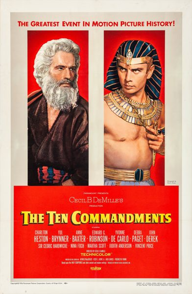

The Ten Commandments

Starring: Charlton Heston, Yul Brynner, Anne Baxter
Director: Cecil B. DeMille
Writer: Æneas MacKenzie, Jesse Louis Lasky Jr., Jack Gariss
Producer: Cecil B. DeMille, Henry Wilcoxon
The Ten Commandments is a 1956 American biblical epic film produced, directed, and narrated by Cecil B. DeMille, shot in VistaVision (color by Technicolor), and released by Paramount Pictures.
Trivia
- Won the Academy Award for Best Special Effects.
- Also nominated for: Academy Award for Best Cinematography, Color; Academy Award for Best Film Editing; Academy Award for Best Costume Design, Color; Academy Award for Best Picture; and 2 more.
- In July 1951, while he was working on his circus film The Greatest Show on Earth, producer-director Cecil B. DeMille chose Homer's Odyssey as the subject of his next epic.
- Several weeks later, he announced he was going to make a film about the Book of Esther, but then he changed his mind and said he was planning a new film about Helen of Troy, which he eventually canceled.
- A suggestion was to have the contemporary protagonist be an honest politician struggling with "forces aligned against him" and show through that conflict the effects of keeping or breaking the Ten Commandments.
Filming Locations
- We are too poor to offer you any gifts, but we offer you our welcome." The first scenes shot in Egypt included the ones on the summit of Mount Sinai.
- Principal photography began on March 28 with a scene with Anne Baxter and Judith Anderson.
Previous Showings
5 Runs • 4 Festivals
Original Billings: 1 run (September 20, 1957)
All runs on record (5):
- September 20, 1957 (Friday - Saturday)Charlton Heston, Yul Brynner
- February 7 - 8, 1998February 1998
- August 30 - September 2, 2008Summer 2008 Bette Davis, James Stewart, silent films and more!
- June 15 - 16, 2013The 1950s
- December 26 - 28, 2014November–December 2014, plus The Ten Commandments